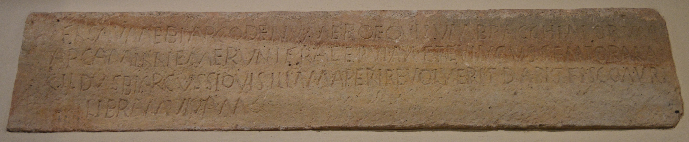

The Inscription of Sauma
PHYSICAL DESCRIPTION
- Type
- Frontal slab of the sarcophagus.
- Material(s)
- Limestone.
- Execution
- Inscribed.
- Dimensions
- 37 × 198 cm
- Epigraphic Field
- 37 × 198 cm
- Letters Height
- 4.5-6.5 cm
Palaeographic comment
Dextrorse direction, horizontal alignment, vertical module, irregular ductus, left-aligned layout.
In this inscription, many letters with similar morphemes are confused and exchanged, such as I instead of T, O in place of Q, and C instead of G. These errors seem to indicate a partial or total state of illiteracy on the part of the stonecutter.
The F sometimes presents an anomalous third arm resting on the baseline, while the upper arm is diagonal, ascending towards the right.
The lower arm of the L is replaced by an arc that intersects the vertical stem at approximately mid-height, very similar to what can be observed in the inscription of Julianus (CIL V 8658 + CIL V 8987; EDR097709).
The T in the second line, in the word frater, shows an anomalous lower arm, which rests on the baseline and extends towards the right.

INSCRIPTION
INTERPRETATIVE TRANSCRIPTION
APPARATUS CRITICUS
1. EOVIVM, Bertolini 1875a; EQVITVM, Bertolini 1876b,
CIL V 8760,
ILS 2804,
ILCV 493,
EDR097908
; EQVI⸢T⸣VM, Lettich 1983
BRACCHIATORVM, Bertolini 1875a, Bertolini 1876b; BRACCHIATORV(M),
CIL V 8760,
ILS 2804,
ILCV 493,
EDR097908
.
2. EMERVNT, Bertolini 1875a, Bertolini 1876b,
CIL V 8760,
ILS 2804,
ILCV 493,
EDR097908
.
2-3. ALA/GILDVS, Bertolini 1875a, Bertolini 1876b,
CIL V 8760,
ILS 2804,
ILCV 493,
EDR097908
.
3. QVIS, Bertolini 1875a, Bertolini 1876b,
CIL V 8760,
ILS 2804,
ILCV 493,
EDR097908
.
TRANSLATION
To Flavius Sauma, biarchus of the numerus of the Equites Bracchiati.
They purchased the sarcophagus for him: his brother Viax, the senator Evingus, and the biarchus Alagildus.
If anyone should wish to open it, he shall pay one (Roman) pound of gold to the fiscus.
PEOPLE
Flavius Sauma
Viax
- COGNOMEN
- Viax
- GENS
- Flavia?
- ORIGIN (of the name Viax)
- germanic
- GENDER
- male
- OCCUPATION
- soldier?
- ROLE
- dedicator
- RELATIONSHIP
- brother (→ Flavius Sauma)
Evingus
- COGNOMEN
- Evingus
- ORIGIN (of the name Evingus)
- germanic
- GENDER
- male
- OCCUPATION
- soldier
- RANK
- senator
- NUMERUS
- Equites Bracchiati
- ROLE
- dedicator
- RELATIONSHIP
- colleague (→ Flavius Sauma)
- RELATIONSHIP
- colleague (→ )
Alagildus
- COGNOMEN
- Alagildus
- ORIGIN (of the name Alagildus)
- germanic
- GENDER
- male
- OCCUPATION
- soldier
- RANK
- biarchus
- NUMERUS
- Equites Bracchiati
- ROLE
- dedicator
- RELATIONSHIP
- colleague (→ Flavius Sauma)
- RELATIONSHIP
- colleague (→ Evingus)
Bibliography
- EDR
-
EDR097908
- Author of the record:
- Damiana Baldassarra
- Date:
- 26-11-2007
COMMENTARY
Sauma was a biarchus, a cavalryman of the equites Bracchiati seniores, a vexilatio palatina which, according to the Notitia Dignitatum, was stationed in Italy (ND occ. 6, 45; 7, 161).
The brother of Sauma, Viax, and the deceased's colleagues, Evingus and Alagildus, dedicated the burial to him.
While the origin of the names Evingus and Alagildus is clearly Germanic (Hoffmann 1970, 32, nt. 274; Lettich 1983, 67), that of Sauma and Viax is more debated. According to Holder, Sauma is a name of Celtic origin (Holder 1904, 1382); according to Hoffmann, it derives from the Greek σάγμα (cloak) (Hoffmann 1970, 32, nt. 275); according to Schönfeld, Sauma is a variant of Siuma, a Germanic name (Schönfeld 1911, 282). Furthermore, according to Schönfeld, the cognomen Viax is Germanic and derives from *Viha-ax (battle-axe) (Schönfeld 1911, 262). In this critical edition, a Germanic origin for both names is considered more probable, as they are associated with other cognomina of Germanic origin (Evingus and Alagildus).
The identity of Viax remains unclear. His military rank is not specified, but it would be unlikely for a civilian to follow his brother during the movements of his numerus. It cannot be excluded that Viax was not in Concordia, but had simply contributed financially to Sauma's sarcophagus, sending a contribution to his colleagues. However, it is considered more likely that he was a soldier, a colleague of his brother and a member of the same numerus, and that his rank was omitted as he was a common soldier. Similarly, it is probable that the numerus of Evingus and Alagildus is not mentioned because it would be implied and corresponding to that of Sauma.